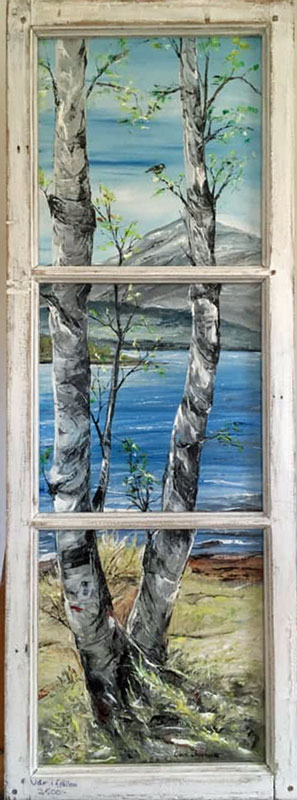
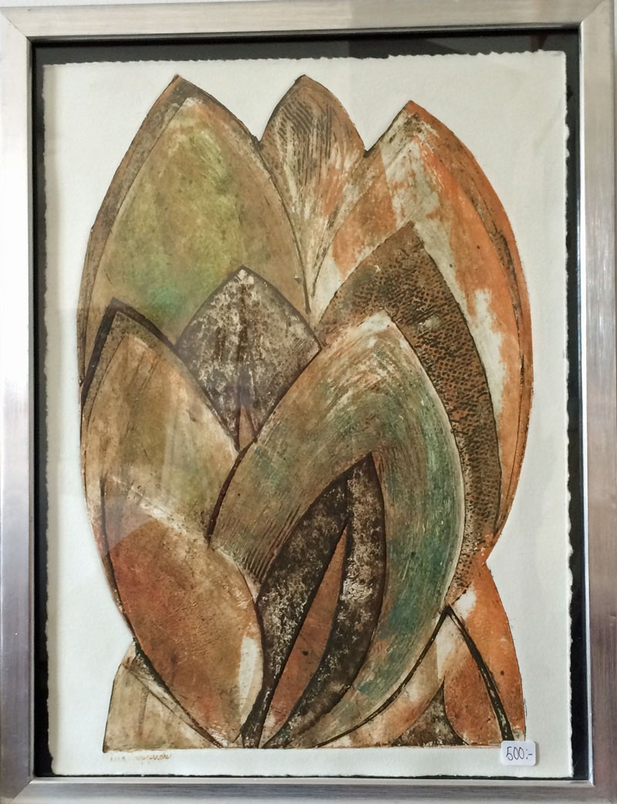
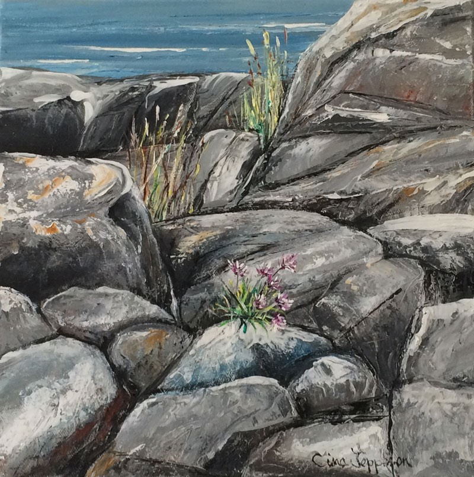
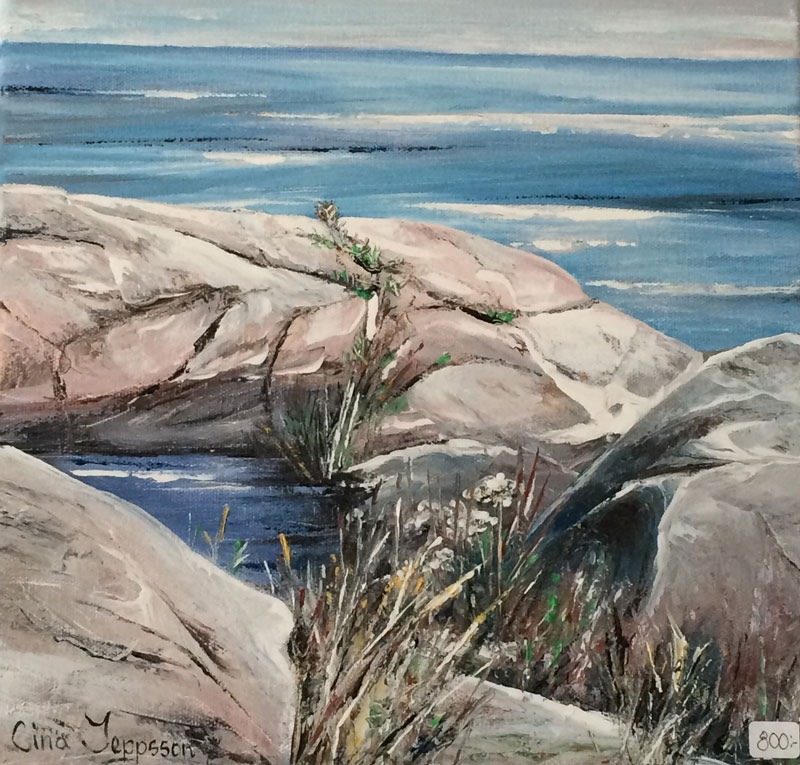
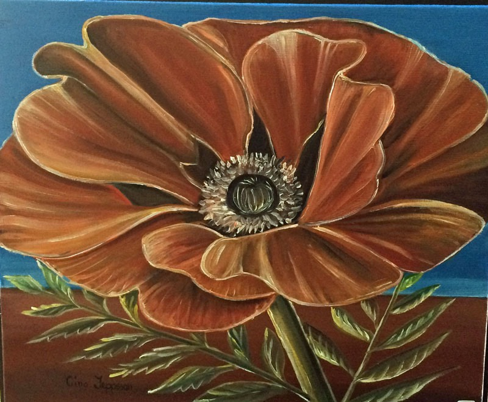
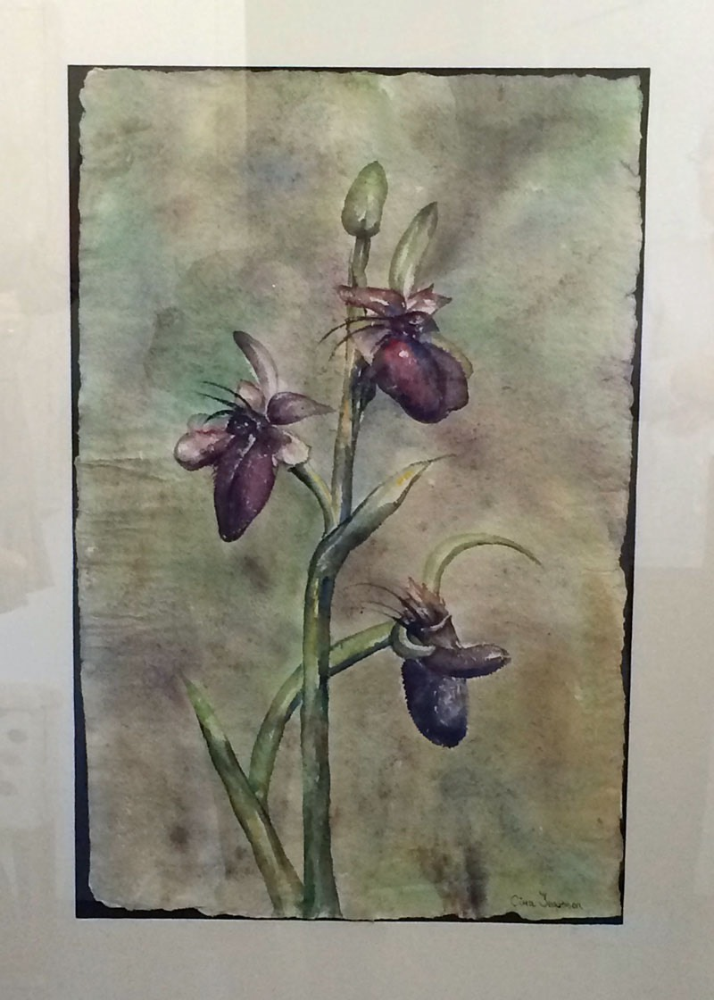
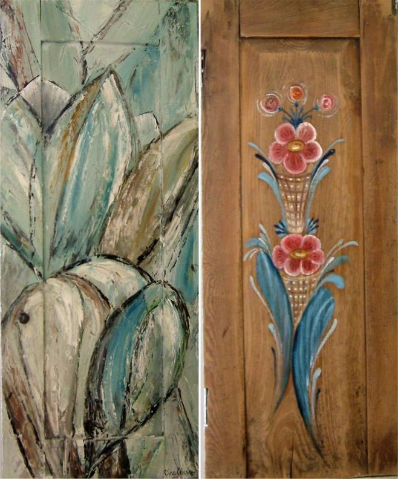
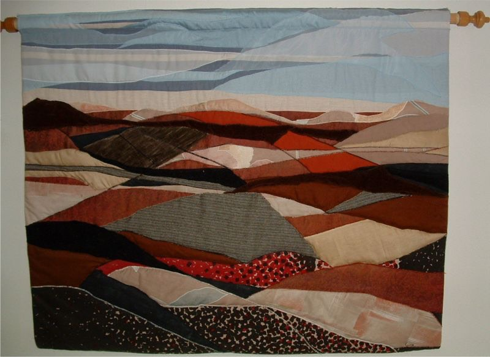

Motiv: Fönsterträd - Storlek: 47 x 139 cm

Motiv: Blomma - Storlek: 35 x 40 cm

Motiv: Blomma - Storlek: 70 x 110 cm

Motiv: Stenstrand - Storlek: 30 x 30 cm

Motiv: Stenstrand - Storlek: 30 x 30 cm

Motiv: Blomma - Storlek: 40 x 40 cm

Motiv: Blomster - Storlek: 80 x 120 cm

Motiv: Skåpslucka - ena och andra sidan - Storlek: (34 x 81 cm)x2

Applikation - Motiv: Landskap - Storlek: 108 x 86 cm